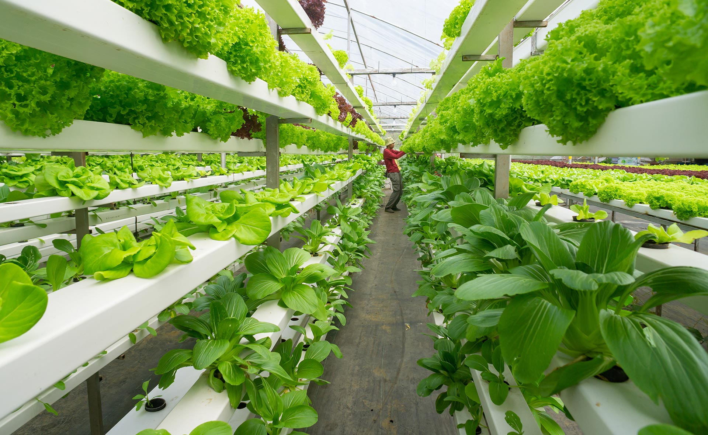
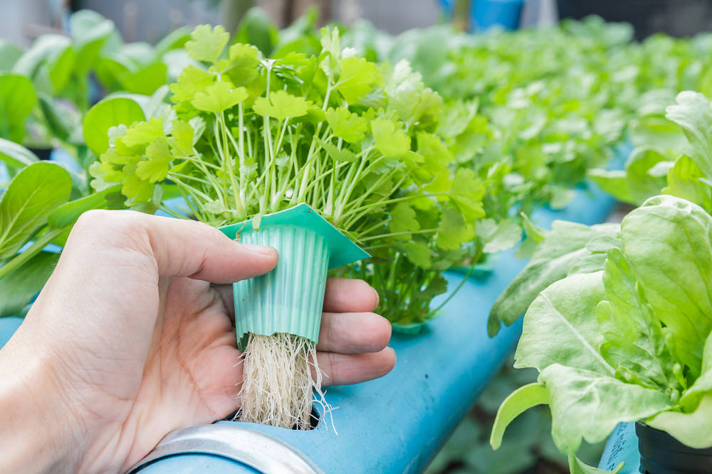
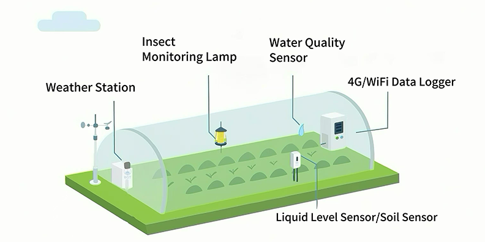
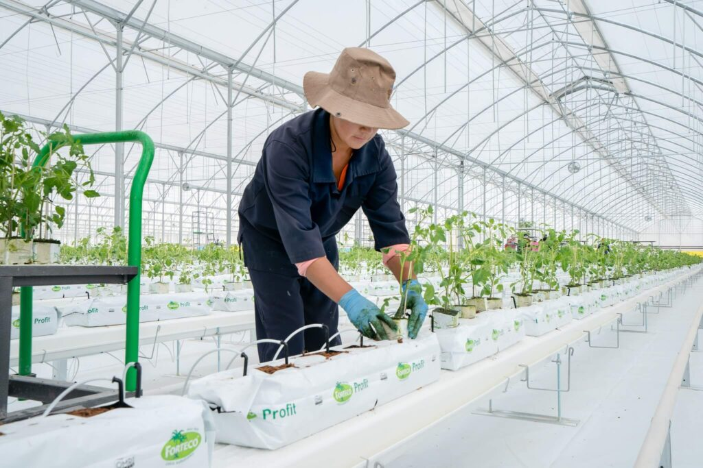
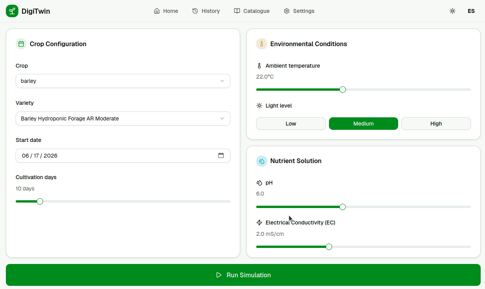
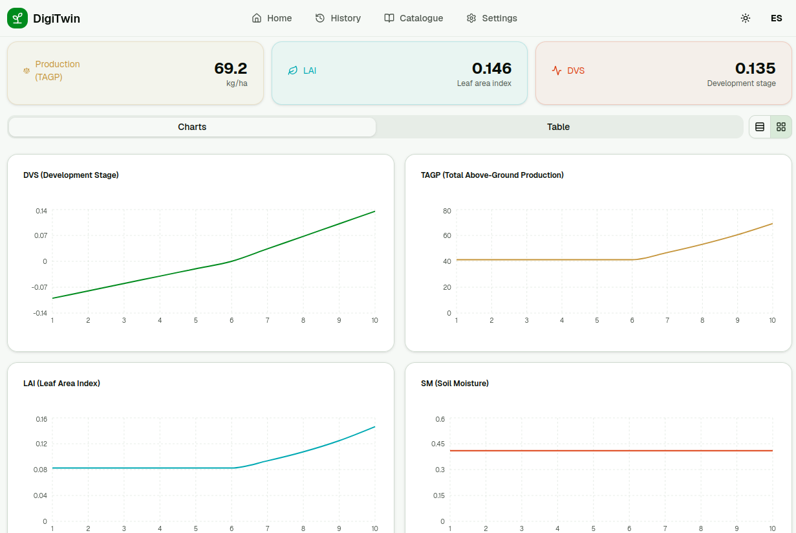
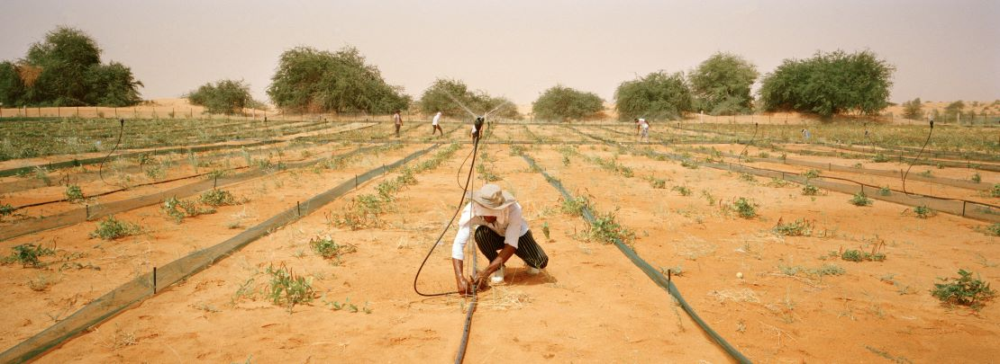
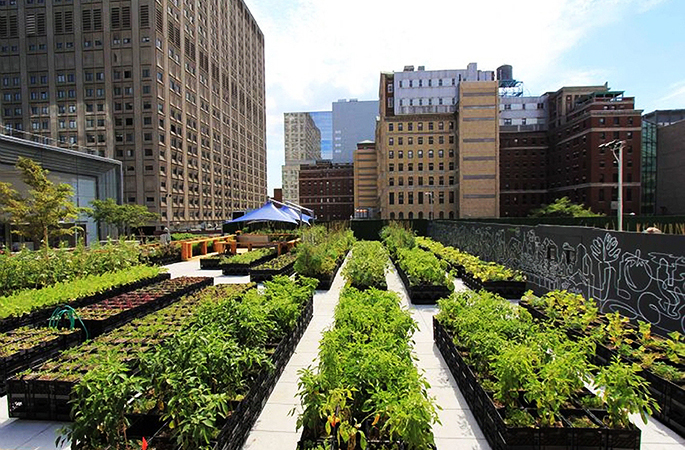

DigiTwin
Gemelo digital para cultivos hidropónicos. Medí, simulá y mejorá la producción antes de plantar.
¿Qué son los cultivos hidropónicos?
Una nueva solución con gran potencial futuro: sistemas de producción agrícola sin suelo, donde las raíces se nutren directamente de una solución de agua y nutrientes.
- Evita pesticidas y agroquímicos
- Contamina menos el agua
- Zonas urbanas o poco fértiles
- Homogeneización de los cultivos


Problemas de los cultivos hidropónicos
El potencial es enorme, pero la barrera de entrada hoy es alta tanto en capital como en conocimiento técnico.

Equipar un sistema hidropónico funcional requiere varios componentes especializados desde el primer día.
- Medidores de conductividad y pH para la solución nutritiva
- Sistemas de iluminación
- Control del aire

Mantener el sistema equilibrado exige conocimiento técnico constante: cualquier desvío en nutrientes, pH o ambiente impacta directo en el rendimiento del cultivo.
- Ajustes frecuentes para equilibrar el sistema
- Curva de aprendizaje pronunciada para nuevos productores
¿Cómo lo resolvemos?
DigiTwin es una plataforma de gemelos digitales que simula el crecimiento de cultivos hidropónicos antes y durante la producción, dando solución a los problemas de inversión y conocimiento técnico, y poniendo en valor cada decisión del cultivo.


Configuración y resultados de una simulación en DigiTwin
Dos mercados listos para adoptar hidroponía inteligente

Maximiza recursos en lugares con dificultad para cultivar de forma convencional producto de sus condiciones climáticas o producto del uso intensivo del suelo.
Emergencia hídrica
Desertificación

Tendencia ecológica frente a alimentos convencionales poco saludables y poco sustentables.
- Sin agrotóxicos
- Sin Contaminación del agua
- En espacios reducidos
Planificación
El camino para construir una base confiable de clientes con el fin de mejorar el modelo y ampliar la oferta de cultivos y funcionalidades.
Conseguir datos suficientes
Sin datos reales de crecimiento no se puede mejorar el modelo de simulación ni ampliar el catálogo de cultivos.
- Mejorar los modelos
- Ampliar catálogo de cultivos
Prueba Piloto
Financiamiento: CrowdfundingA partir de alianzas estratégicas con organizaciones agroecológicas, formar un comunidad de pequeños agricultores para validar el modelo a cambio de recompensas.
Acceso anticipado + Plan premium
Para el productorDatos de cultivo para mejorar el modelo
Del productorLanzamiento
Financiamiento: SuscripciónSistema de subscripción para escalar el acceso a la plataforma a medida que crece la base de datos del modelo.
Un mes de acceso al plan premium
Simulaciones limitadas por mes
Simulaciones ilimitadas
¡Gracias!
Gracias por tu tiempo y por considerar a DigiTwin como aliado para el futuro de la hidroponía.